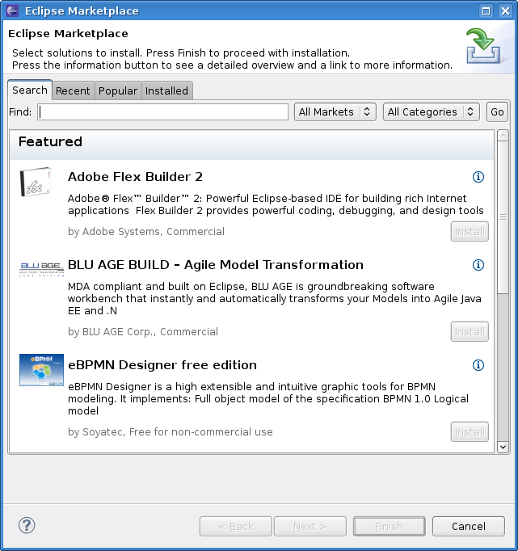

Marketplace Client is a rich client solution for installing solutions listed on Eclipse Marketplace directly from an Eclipse Installation.
The Eclipse community has hundreds, if not thousands, of third-party plugins that users can add to their Eclipse installation. Unfortunately, there is not easy way to discover and install these solutions from within Eclipse.
The Eclipse Foundation operates a website, called Eclipse Marketplace, that provides a listing of Eclipse-based solutions. The listings allow each solution provider to specify a P2 repository for their solution. Eclipse users now have a central catalog to find Eclipse solutions but the install process is still not tightly integrated with the Eclipse workspace.
MPC provides the tight install integration between the Eclipse workspace and Eclipse Marketplace, plus other third party solution listings. MPC is included in all of the EPP packages.
The Marketplace Client version released with Eclipse Luna contains a bug rendering the Market and Category selectors in the MPC wizard unusable.
Please update your Marketplace Client from http://download.eclipse.org/mpc/luna to get a fix for this issue.
MPC is included in all of the EPP download package. However you may also download MPC from the following:
